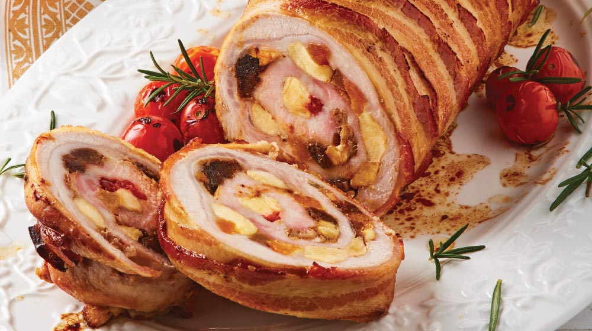

Olla de Carne

La olla de carne es un cocido tradicional costarricense. Consta de un caldo con carne de res en trozos
pequeños a medianos, al que se le agregan abundantes verduras como papa, yuca, chayote, camote, elote,
ayote, zanahoria, cebolla, plátano, culantro, apio, ñampí, ñame, tiquizque, tacaco y otros. Es costumbre
acompañarla con arroz blanco o achiotado, que normalmente se sirve por aparte para que el comensal lo
agregue a su gusto.
Chifrijo
Este platillo está compuesto por una mezcla de abundantes chicharrones, con frijoles, arroz, chimichurri,
aguacate y tortillas de maíz fritas. Hoy en día muchas variantes incorporan otros ingredientes, como
carne,
repollo, distintos condimentos y aderezos.
Lomo Relleno

El lomo relleno es un plato tradicional de herencia española. Tomó un carácter festivo desde su origen en
la época colonial, servido en bodas, vacaciones y Navidad; hoy en día es un platillo sumamente típico.
Para
su relleno se suelen utilizar abundantes especias, algún queso blanco de vaca, jamón, tocineta y el
infaltable guiso criollo (huevo duro, aceitunas, uvas pasas, mostaza, alcaparras, garbanzos, cebolla y
chile
dulce), mientras que el corte preferido usualmente es el lomo de cerdo, aunque también puede usarse de
res, e
incluso pechugas de pollo y filetes de carne.